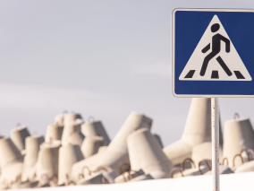
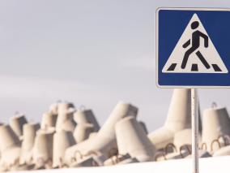

Путешествия по России
Настоящая страна не в выпусках новостей, а здесь.

ваша полка — верхняя
Чего мы там не видели?
По опросам ВЦИОМ, 95% россиян мечтают
куда-нибудь поехать, но только 36% планируют провести отпуск
в родной стране. Мол, чего мы тут, дома, не видели? На самом
деле, Россия — это целая вселенная с ласковым морем юга, густыми
лесами Саян и суровыми льдами плато Путорана. А ещё увидеть
все эти красоты можно без миллионов на счету, загранпаспорта
и многочасовых перелетов. Как, например, Вера Башмакова — смелая
молодая мама, которая взяла в охапку троих детей, усадила
их в свою «Ладу» и проехала 20 тысяч километров по родной
стране. Мы выбрали и описали некоторые интересные места,
достойные вашего отпуска.
- Часовых поясов
11
- Объектов природного наследия
юнеско
12
- Объектов культурного наследия
юнеско
16
- Природных заповедников
105
- Аэропортов
241
Куршская коса

- Здесь, посреди лесов и песчаных дюн,
вы сможете увидеть два водных горизонта — спокойного Куршского
залива с одной стороны и подёрнутого рябью волн Балтийского моря
с другой. Уникальная природная зона на краю российского анклава.
- На этом Калининградская область не
заканчивается. Для путешественника и исследователя там же по
соседству — самая западная точка России, Балтийская коса, — и
немецкое наследие россыпи небольших приморских городов. Атмосфера
здешних мест исключает суету, окуная в спокойствие природы и
запах стального, прохладного моря.
Кольский

- Почти весь полуостров находится
за Полярным кругом. Саамская тундра, от которой на юг —
тайга, а на север — Ледовитый океан, прикидывающийся
Баренцевым морем.
- Возможно, вы смотрели Звягинцева
и даже слышали историю арктического фестиваля в Териберке.
Возможно, слово «Хибины» не осталось под снегом школьных
воспоминаний об уроках географии. Возможно, вы не интересовались
пронизывающей земную кору сверхглубокой скважиной, а от апатитов
вас давно накрывает апатия. Но ваша мечта увидеть северное
сияние начинает сбываться с билетом в Мурманск.
Алтай

- Алтай — одно из красивейших мест в России.
В первую очередь из-за гор: если ехать вдоль хребта,
вы увидите склоны, усыпанные соснами, горные реки и озёра.
А если вы откроете в автомобиле окна,сможете познакомиться
с невидимым чудом здешних мест — горным воздухом.
- Климат на Алтае умеренный, поэтому ехать
сюда лучше всего летом. Так вы увидите всё разнообразие местной
флоры и фауны. По лесам Алтая бродят лоси, над хребтами летают
орлы, а на равнинах пасутся косули. И знаменитые манулы — тоже
обитатели Алтайского края.
Зимний Байкал

- Всем известен Байкал как крупнейшее
озеро в мире. Многие также знают, что это самый большой источник
пресной воды и одно из красивейших мест в России.
- Конечно, это всё так. Но Байкал ещё
идеальное место для соревнований по скийорингу. Это такой вид
спорта, когда лыжник привязывает себя к мотоциклу, и тандем
старается развить как можно бóльшую скорость на льду. В марте
2019 года на фестивале «Байкальская миля» был поставлен
мировой рекорд — 197.011 км/ч.
Карелия

- Сибирь заканчивается не на Урале,
а в Карелии: образующая тайгу сибирская лиственница не растёт
западнее Водлозера. Зато здесь она вымахивает на 30 метров — леса
карельских национальных парков из-за непроходимых болот никогда
не знали топора. Некоторым соснам уже больше чем полтысячелетия.
Прикоснитесь к живому существу, видевшему солнце раньше,
чем увидал его Иван Грозный. В девственном лесу на сотню
километров не встретишь тропы. А на редких тропинках деревья
в паре метров от земли помечены медвежьими когтями.
Чтобы все знали, кто тут хозяин.
По мотивам учебной темы о
Транссибе — путешествие от столицы до Байкала на электричках.


 
